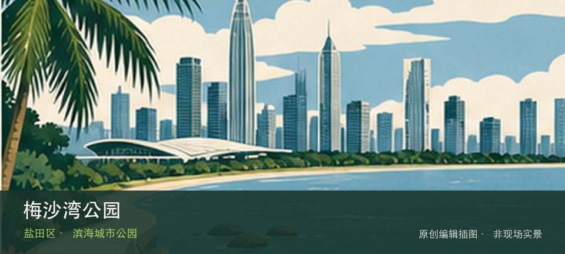

适合谁
适合海岸观察、轻量步行和愿意服从海况边界的人；不适合追逐未开放穿越线。

SHENZHEN GUIDE · 119
梅沙上成路8号 · 滨海城市公园
梅沙湾公园位于梅沙上成路8号，位于大小梅沙之间的山海节点，以滨海眺望、山体绿地和社区休憩承担海岸线路的中途停靠。从梅沙湾海景转向山海过渡步道时，地点的空间、历史或使用方式才会变得清楚。海岸体验取决于梅沙湾海景与山海过渡步道当天的风浪、潮位和运营边界，不宜把旧照片当成实时承诺。先确定安全退路和返程节点，遇雷雨、台风影响或封闭提示就缩短行程。
WHY GO
适合海岸观察、轻量步行和愿意服从海况边界的人；不适合追逐未开放穿越线。
第一次到梅沙湾公园先把梅沙湾海景设为主目标，再视天气和现场边界决定是否前往山海过渡步道；返程节点应在出发前确定。
公共交通先到梅沙上成路8号片区，再以梅沙湾公园公开参观入口为终点；多入口地点须按计划游线选择入口，并预先锁定返程站点。
自驾只使用梅沙湾公园官方或片区正规停车场；海滨旺季先查预约、限行和接驳，满位后不要在村道或应急通道等候。
10 月至次年 4 月体感较舒适；夏季亲水先查海况，雷暴、台风影响或大浪提示下不靠近水线。
NEARBY IDEAS
 编辑配图·非现场实景
编辑配图·非现场实景
马峦山环线位于梅沙湾公园起终点，跨坪山、盐田和大鹏，约38.5公里的山海环线穿过溪瀑、林地、村落和海岸视野，台风雨季必须主动取消。
 编辑配图·非现场实景
编辑配图·非现场实景
木星美术馆位于福田保税区，民营当代艺术空间位于产业园区语境，展览常围绕年轻艺术、跨媒介实践与收藏项目展开，门禁比市属馆更需确认。
 编辑配图·非现场实景
编辑配图·非现场实景
梅沙艺术中心位于盐田环梅路，官方名录将它列为面向公众的艺术空间。它适合与梅沙滨海路线分开安排：先确认当期展览和预约，再根据天气决定是否把海岸散步作为前后段。